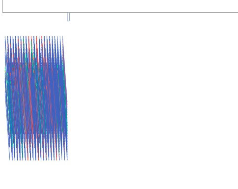

Experiment 5 - 3D Graphics
Imitate
To develop artistic creativity in coding, it can be helpful to start by studying and learning from existing examples. This might involve reviewing code written by others, analyzing successful techniques, or even copying and modifying code to better understand how it works. By imitating and learning from existing techniques and strategies, we can gain a better understanding of what has been done before and what is possible, and identify opportunities for improvement and innovation.
What code did you start with? (You don't need to provide the code itself, but where did you start?) Document this step briefly.
A: I started off with code from "P_3_2_5_01" and I was really interested by this piece since I hadn't worked with any 3D pieces yet. It was a lot of fun playing around and interacting with this piece, I thought it was really cool how many different parts there were from interacting with it and later looking more thoroughly at the code.
Integrate
After learning from existing techniques and strategies, we can build upon that foundation by combining elements from different sources. This might involve combining elements from different programming languages, using libraries or frameworks in new ways, or bringing together techniques from different fields or disciplines. By integrating and combining elements from different sources, we can create something new and unique.
How did you extend the code or combine with another technique to make something new? Document this step.
A: For this piece I also took inspriation from "P_3_2_5_03" and the use of 3D graphics while allowing users to type. I liked that there was freedom to add more to the piece, such as letters from yping and I also liked how the depth of the characters was able to move on it's own. My interaction with the piece made it move but I didn't necessarily control all of the movement in the piece. I wanted to incorprate this technique with the other piece but found it a bit difficult to try and create an effect the fonts the way I wanted to but I just tried working on it more. Ultimately it wasn't working so I gave up on working with the techniques from "P_3_2_5_03".
Innovate
Finally, we can introduce new or original ideas to our coding process by thinking creatively and pushing the boundaries. This might involve developing entirely new techniques or approaches, or using existing techniques in new and creative ways. By innovating and introducing new ideas, we can create art that is truly groundbreaking.
How did you use the code as a jumping off point to create something truly unique and novel? Document this step thoroughly.
A: One thing I really liked about the first piece I looked at was the 3D graphics but I didn't like how it looked after more typing. However, for P_3_1_1_01 I really like the typing effect but it didn't include a lot of 3D graphics. I thought it would be fun to combine the 2 and also play around with the working of the origianl piece to send a message. When someone doesn't want to be disturbed, they'll usually try to hide ao I thought it would be fun to replicate this experience by making the words very vibrant but then also allowing for them to be hidden by new letters covering them.
Reflection
Each person that worked on the code should reflect on the process, the difficulties, and the successes of the experiment. Here's where you can put your reflections.
- What part of the project you contributed
- A reflection on your work and the work of the team
- Brief highs and lows
This was a fun experiment working with 3D graphics since I had never worked with them them before and as a sole person working on this project it was a great learning opportunity. One challenge I had was working with fonts in this piece, it was a little confusing at first and not everything was working as planned for the first few modificaions. Ultimately, I'm really happy it was able to work out and I think what I made was really fun to make and interact with.